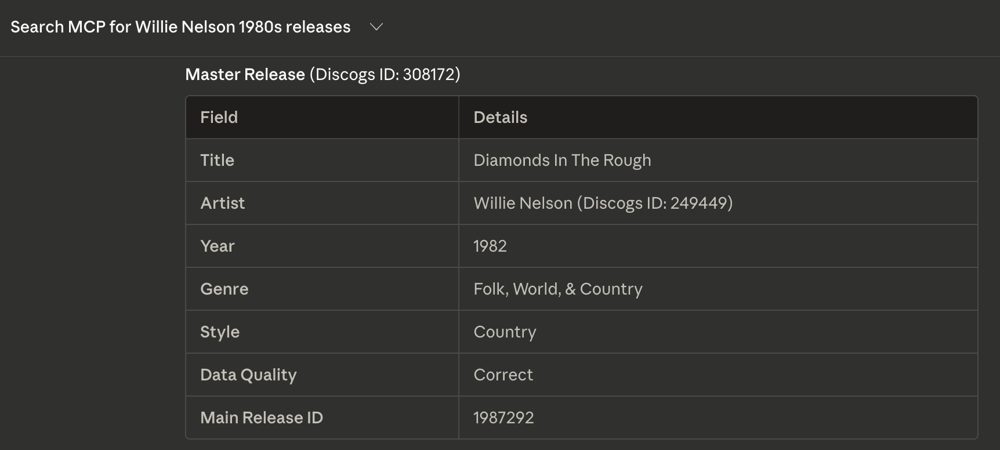

Build Tracking
Database build, not vibes.
Execution tracker for the Dig implementation plan. This page is a manual progress snapshot for ingest, transforms, gates, and the next actions needed to move from data loading to retrieval/API work.
Live Build Snapshot
Manual update from overnight runs / latest operator report
Raw entities
24,025,633
All 4 entity types ingested into
ingest.raw_entitiesraw_entities size
81 GB
Main disk pressure driver during coexisting raw + catalog transforms
DB size (post-transform)
192 GB
Observed after full releases transform + FTS population
Search benchmark
0 errors / 96
Run 8 (full corpus, Fly.io): 0 errors. p50 108ms. 7/7 warm SLOs pass
| Process | Status | Progress | Rate / note |
|---|---|---|---|
| Full restore to Fly | done | ~555M rows across 12 tables, row counts verified | pg_restore -j4, ~14h total. Disk: 156GB / 300GB |
| Releases ingest | done | 18,876,362 releases loaded | 4,770s (80 min), ~3,958/s |
| Artists transform | done | Complete | 48s |
| Labels transform | done | Complete | 626s (~10 min) |
| Masters transform | done | Complete | 1,822s (~30 min) |
| Releases transform | done | 18,876,362 transformed | Cursor-pagination resume path validated; idempotency rerun pass |
| Gate B checklist | closed w/ caveats | 6/6 checklist items checked | CAVEAT: partial artists dump + recalibrated estimate-derived thresholds |
Full-corpus restore complete. Run 8 benchmark passed (7/7 warm SLOs). Phase 5 Week 1 shipped: search IA upgrade (exact/prefix boost, FK dedup, per-type cap), track-level credits with inline roles, product telemetry (5 event types), alpha ops pack (issue templates, rollback verified, rate-limited events endpoint). Cover Art Archive integrated: 1.77M crosswalks, Redis cache. Version list now shows format + country. Artist aliases collapsible. Frontend on Fly.io (always-on).
Search Benchmark
Run 8 — Full corpus (18.9M releases), Fly.io production,
06b5c58 — 96 requests, 0 errors| Category | p50 | p95 | Warm SLO | Status |
|---|---|---|---|---|
| Release FTS | 115ms | 272ms | p95 < 500ms | pass |
| Common-term | 111ms | 177ms | p99 < 1,000ms | pass |
| Fuzzy | 201ms | 347ms | p95 < 500ms | pass (warm) |
| Filtered | 171ms | 298ms | p95 < 300ms | pass (warm) |
| Multi-entity | 104ms | 246ms | p95 < 500ms | pass (warm) |
| Unicode | 100ms | 173ms | p95 < 100ms | borderline (network) |
| Retrieval | 98ms | 184ms | p95 < 200ms | pass |
| Traversal | 94ms | 170ms | p95 < 200ms | pass |
108ms
Overall p50
347ms
Overall p95
7 / 7
Warm SLOs pass
Run 8 (
06b5c58): First benchmark on full 18.9M-release corpus on Fly.io (shared-cpu-2x, 4GB RAM). 0 errors across 96 requests. Cold-cache spikes on Run 1 only (fuzzy 1.2s, filtered 711ms, multi-entity 1.4s) — all resolve to <350ms by Run 2. Warm SLOs pass in all 7 categories. pg_prewarm on deploy would eliminate cold-start failures entirely. See docs/phase2-search-benchmark-results.md for full detail.
Benchmark Progression
p50 latency across 8 benchmark runs — from Docker baseline to full-corpus production
Local (Docker / native PG)
Production (Fly.io, internet)
Run 5
two-path rewrite
Run 6
+stop-word fix
Run 7
staging (50k releases)
Run 8
full corpus (18.9M)
p50 improved from Run 7 (117ms, 50k releases) to Run 8 (108ms, 18.9M releases) — full corpus is faster at p50 due to warm cache from the larger 4GB RAM allocation. Network overhead (~80ms) dominates; DB query time is 20-30ms for most operations.
First MCP Result
Willie Nelson via Claude Code → dig-mcp.fly.dev → Fly Postgres — 2026-02-28

First live MCP tool call — Claude Code querying search_catalog for Willie Nelson 1980s releases, returning structured data from Fly Postgres via SSE transport.
Dig (Full Corpus) vs Discogs API
Run 8 — Both over internet, full 18.9M releases, p50 latency (lower is better)
Dig (Fly.io Virginia, 18.9M releases)
Discogs API (remote CDN)
Release FTS
Dig 2.1x
Common-term
Dig 1.7x
Fuzzy
Even
Filtered
Dig 1.3x
Multi-entity
Dig 2.1x
Unicode
Dig 1.9x
Retrieval
Dig 2.3x
Traversal
Dig 2.4x
108ms
Dig p50 (full corpus)
212ms
Discogs p50 (CDN)
7 / 8
Categories Dig wins
Full-corpus internet comparison. Dig on Fly.io (shared-cpu-2x, 4GB RAM, Virginia, 18.9M releases) vs Discogs API (CDN). Both measured from the same macOS client. Dig is faster in 7 of 8 categories at p50, even with the full 18.9M-release dataset. Fuzzy is roughly even (201ms vs 194ms) — pg_trgm label/master scan adds ~100ms vs the Run 7 staging set. Retrieval and traversal are 2x+ faster. Network overhead (~80ms) dominates both sides.
Mitigations Applied
Search fixes shipped in Phase 2 hardening
Benchmark Progression
- ✓Statement timeout enforcement — pinned
db.connection()withSET statement_timeout = '3s'. Max query now bounded per entity type. - ✓Broad query detection — 30-term high-frequency list + short token heuristic. "Love": 12s → 5ms, "Remix": 15s → 7ms
- ✓Degraded response path — broad release queries return unranked recent matches with
meta.degraded: trueand refinement hint - ✓websearch_to_tsquery — stricter FTS matching for releases, reducing candidate sets on common terms
- ✓Rank threshold — filter
ts_rank_cd > 0.0001, eliminating noise results - ✓Max page size — reduced from 100 to 50, limiting sort cost
- ✓Per-entity-type timeout handling — if one entity type times out, remaining types still return results
- ✓Two-path release search rewrite — Path A ranked + Path B guarded degraded for broad/filtered release queries
- ✓Stop-word empty tsquery short-circuit — "The", "A", "An" etc. return instantly instead of full-table scan. "The": 3s→1ms
- ✓
degraded_reasonobservability — tracked inmetafor all degradation paths (5 reason codes) - ✓Fuzzy threshold tuning — labels/masters 0.45→0.5, cap 5 results. Warm: 87ms. Cold spikes are cache eviction
Roadmap & Checklist
Implementation plan execution tracker (manual)
Phase 0A / 0B + Gate A
- ✓System scaffold (monorepo, Fastify, Kysely, migrations, local Postgres/Redis, CI)
- ✓Full profiling for artists/labels/masters + 500k release sample, sizing report, image absence confirmation in sampled releases
- ✓Normalization Dictionary v1 + Preserve/Normalize matrix + QA Gate Spec + Image Strategy v1
- ✓Parser fixtures/tests and LEGAL draft completed; Gate A checklist closed
Phase 1 + Gate B
- ✓7.1 Ingest infra tables + catalog schema + indexes + FTS columns
- ✓7.2 Full-tree parser and ingest pipeline hardening; 52 tests passing
- ✓Raw ingest complete for all 4 entity types into
ingest.raw_entities - ✓7.3 Canonical upserts complete for releases, including child fanout tables
- ✓7.5 QA/reconciliation report completed and thresholds recalibrated with evidence
- ✓7.6 / 7.6A Idempotency and restart behavior validated with cursor-based rerun
- ✓7.7 FTS vectors populated (all 18,876,362 releases)
- ✓Gate B closed with caveats documented in implementation plan and handoff snapshot
- ◐Known limitation: release-title
pg_trgmfuzzy search p99 above target (Phase 2 mitigation)
Phase 2
- ✓Query envelope locked (
docs/phase2-query-envelope.md): filters, sorts, fuzzy policy, timeout budget, broad query spec - ✓Response contracts locked (
docs/phase2-response-contracts.md): search, entity detail, traversal, errors,meta.degraded - ✓Search mitigation plan (
docs/phase2-search-mitigation.md): release fuzzy disabled in v1 - ✓Multi-entity FTS search with filters (genre/style/year/country) + fuzzy fallback on artist/label/master
- ✓Entity retrieval services: artist, label, master, release (all child tables joined)
- ✓Traversal services: 5 link types (artist→releases, artist→masters, label→releases, master→releases, release→credits)
- ✓Fastify /v1 routes wired: search, entities, traversal — all live-tested against 192GB database
- ✓Benchmark runner (
pnpm benchmark:search): 32-query suite, 8 categories, acceptance criteria - ✓
statement_timeoutenforcement via pinneddb.connection()— 3s per-statement, graceful per-entity-type fallback - ✓Broad query detection + degraded response path: "Love" 12s→5ms, "Remix" 15s→7ms, max query 19.7s→2.0s
- ✓Query envelope tightening:
websearch_to_tsqueryfor releases, rank threshold 0.0001, max page 50 - ✓Benchmark Run 3 (Docker): 4/7 pass. Warm p50 well under all targets
- ✓Native Postgres migration — 58GB catalog cloned from Docker PG to native PG 14 (25 tables, 204M+ rows)
- ✓Benchmark Run 4 (native PG): common-term now passes. Filtered queries confirmed genuinely broken (not Docker artifact)
- ✓Discogs API comparison benchmark: Dig faster in 7/7 categories, 38/46 queries. Overall p50: 36ms vs 223ms
- ✓Filtered query fix (P0): two-path rewrite (
a16df00), migration indexes + docs sync (bd00be3) - ✓Benchmark Run 5: 0 errors / 96 queries. All filtered queries returning results. Retrieval p95 36ms, Unicode p95 80ms
- ✓Stop-word empty tsquery fix (
0b6df75): "The" 3s→1ms. Client-side short-circuit before DB hit - ✓
degraded_reasonobservability: tracked inmetafor all paths (empty_tsquery, broad_query, filtered, filtered_capped, statement_timeout) - ✓Warm/cold SLO framework documented in
docs/phase2-search-benchmark-results.md - ✓Benchmark Run 6 (
0c03bb9): 0 errors / 96. Common-term now passes. 4/8 warm SLOs pass - ✓Fuzzy threshold tuned: labels/masters 0.45→0.5 (warm 87ms in isolation; benchmark spike is cache eviction)
- ✓Phase 2 release decision block locked in benchmark docs + implementation plan gate criteria
- ✓Rate limit middleware + ops hooks shipped in Phase 3 API protection pass
- ✓Startup warmup (
pg_prewarm) — 8 indexes, 325k blocks, verified on Fly
Phase 3
- ✓REST API hardening: two-tier rate limiting (60/min anon, 300/min keyed), CORS, structured JSON logging
- ✓MCP server: 6 tools (
search_catalog,get_artist,get_label,get_master,get_release,traverse_links) - ✓MCP SSE transport via Express (port 3001), 18 contract tests + 47 smoke tests passing
- ✓Deployed to Fly.io: dig-api + dig-mcp, Fly Postgres (2.5M masters, 50k releases), Upstash Redis
- ✓Rollback drill executed (v2→v1→latest, health verified)
- ✓Production benchmark Run 7: 32 queries, 0 errors, p50 117ms (internet round trip)
- ✓Gate D: GO (staging alpha) — all required criteria met
- ✓Claude Desktop + Claude Code MCP verified (both environments confirmed working)
- ✓API quickstart doc with curl examples, MCP setup, error codes (
docs/quickstart.md) - ✓Ops runbook: 4 incident types, deployment, rollback, DB access (
docs/ops-runbook.md) - ✓Alpha invite brief with staging limitations + usage policy (
docs/alpha-invite.md) - ✓Phase 4 prerequisites: migration plan, capacity plan, cost estimates (
docs/phase4-prerequisites.md)
Phase 4
- ✓Full releases dataset migration complete (~555M rows, 12 tables, row counts verified)
- ✓ANALYZE + search_vector verification — all 18.9M releases populated
- ✓Run 8 benchmark: 0/96 errors, p50 108ms, 7/7 warm SLOs pass
- ✓Dump cleanup (22GB freed) + DB scaled to serving profile (shared-cpu-2x, 4GB)
- ✓Next.js frontend scaffold: search + release detail pages, CSS Modules design system, server-side API fetch with timeout + runtime guards
- ✓Deployed to Fly.io (
dig-web, always-on), migrated from Vercel — no cold starts - ✓Master-first search IA: grouped result sections, duplicate release collapse under master releases
- ✓Entity pages:
/release/[id](canonical album),/version/[id](pressing),/artist/[id],/label/[id] - ✓URL restructure:
/master/→/release/,/release/→/version/— matches user mental model - ✓Cover Art Archive integration — 1.77M crosswalks, cover proxy + Redis cache, frontend display
- ✓Search warmup (
pg_prewarm) — 8 indexes, 325k blocks, all warm queries <200ms - ✓Filtered release query hardening under concurrency (c100) — 0 timeouts/errors after index + fallback changes
- ✓Gate E: GO for soft alpha (5-10 testers). 5 keys issued.
Enrichment Pipeline (EN-A → EN-E)
- ✓EN-A — Schema:
enrich.*schema (8 tables) applied local + Fly. Crosswalks, edges, context, linkouts, events. - ✓EN-B — API: Enrichment endpoints live —
/artists/:id/relationships,/artists/:id/context,/artists/:id/timeline,/labels/:id/linkouts. Query params:include_enrichment,min_confidence,sources. - ✓EN-C — MusicBrainz: 1.77M release crosswalks, 1.21M artist crosswalks (200K with Wikidata QIDs), 423K relationship edges (23 edge types). All imported from MB dump.
- ✓EN-D — Setlist.fm: Timeline pipeline live. 1,778 events across 208 artists. API endpoint + frontend display on artist pages.
- ✓EN-E — Label linkouts: 53,233 label linkouts (34K Bandcamp, 19K Instagram). Verification queue with URL health checks. 6,808 verified, displayed on label pages with brand icons.
Frontend + UX Polish
- ✓Discogs profile parsing:
[aXXX]/[lXXX]refs rendered as clickable links on artist + label pages. Name resolution via API with Discogs fallback. - ✓Label linkout display: Bandcamp + Instagram pills with brand SVG icons on label pages.
- ✓Related artists: MusicBrainz relationship edges displayed with human-readable labels (Member of, Collaborated with, etc.).
- ✓External URLs: Domain name display (Bandcamp, SoundCloud, etc.) instead of raw URLs.
- ✓Nav cleanup: Simplified navigation, reliable back link, clean search on sub-pages.
- ✓Media embeds: YouTube/video embeds on release pages from Discogs video data.
- ✓OG share cards: Dynamic Open Graph + Twitter Card metadata on all entity pages. Cover art images for releases/versions, dynamic branded fallback images for artists/labels.
- ◐Artist catalog gap: Full artist re-ingest in progress (~9.8M from Discogs dump). Currently have 289K of ~9.8M. Ingest running with fixed backpressure parser.
Phase 5 — Week 1
- ✓Day 1 — SLO Baseline: Froze alpha SLO table (p50/p95/p99/timeout/error rates). Load tested c100 across artist FTS, broad release FTS, filtered queries. GO threshold explicit per search class.
- ✓Day 2 — Filtered Query Hardening: Zero 5xx under c100 filtered load. Zero timeouts post-fix. All filtered paths return
degraded_reason: "filtered_capped". - ✓Day 3 — Track-Level Credits UX: Always-visible per-track credits grouped by role (Written-By, Mixed By, Vocals, etc.). Artist links where IDs available. Mobile-responsive at 480px breakpoint.
- ✓Day 4 — Search IA Upgrade: SQL-level exact/prefix name boost, FK-based dedup (replaces fuzzy title+year), per-type result cap,
is_main_releasesignal. "Prince" now surfaces correctly. Before/after documented. - ✓Day 5 — Product Instrumentation: 5 event types live (
search_submitted,search_result_clicked,release_page_viewed,version_page_viewed,outbound_discogs_clicked). Structured JSON to Fly logs. Schema documented. - ✓Day 6 — Alpha Ops Pack: Events rate limiting (30 req/min per IP). GitHub issue templates (bug + feature request). Ops runbook updated. 10/10 pre-launch gate items GO.
- ✓Day 7 — UX Polish: Version list shows format (CD/Vinyl/File) + country (UK/US/Europe) tags. Artist aliases collapsible ("+N more" toggle for large alias sets like Bowie's 60+).
- ◐Day 7 — Soft Alpha: Invites ready to send. 5 keys issued. First 24h monitoring + triage loop pending.
- ✓Media embeds spike planning + M1 audit complete for release/version pages —
docs/media-embeds-release-version-plan.md,docs/media-embeds-audit.md - •User auth + collections remain post-alpha scope
Data layer: 18.9M releases + 2.5M masters + 2.3M labels + 289K artists (full re-ingest in progress → 9.8M). Discogs CC0 February 2026 dump on Fly.io. Disk: 158GB / 300GB.
Enrichment: 1.77M release crosswalks + 1.21M artist crosswalks + 423K relationship edges + 53K label linkouts + 1.8K setlist events. MusicBrainz, Wikidata, setlist.fm, Bandcamp, Instagram.
Search: Postgres FTS (
Live: app.dig.baby (search UI) + dig-api.fly.dev (REST) + dig-mcp.fly.dev (MCP SSE). Cover art via CAA (1.77M releases). Enrichment API live.
UX: Release pages with tracklist + credits + cover art + media embeds. Discogs profile markup parsed. Label pages with Bandcamp/Instagram linkouts. Artist pages with related artists + timeline. Mobile-responsive.
Next milestone: Complete artist re-ingest (9.8M), transform to catalog, waitlist live on dig.baby.
Enrichment: 1.77M release crosswalks + 1.21M artist crosswalks + 423K relationship edges + 53K label linkouts + 1.8K setlist events. MusicBrainz, Wikidata, setlist.fm, Bandcamp, Instagram.
Search: Postgres FTS (
tsvector) with exact/prefix name boosting, pg_trgm fuzzy, FK-based dedup, per-type result caps. Run 8: 7/7 warm SLOs pass.Live: app.dig.baby (search UI) + dig-api.fly.dev (REST) + dig-mcp.fly.dev (MCP SSE). Cover art via CAA (1.77M releases). Enrichment API live.
UX: Release pages with tracklist + credits + cover art + media embeds. Discogs profile markup parsed. Label pages with Bandcamp/Instagram linkouts. Artist pages with related artists + timeline. Mobile-responsive.
Next milestone: Complete artist re-ingest (9.8M), transform to catalog, waitlist live on dig.baby.